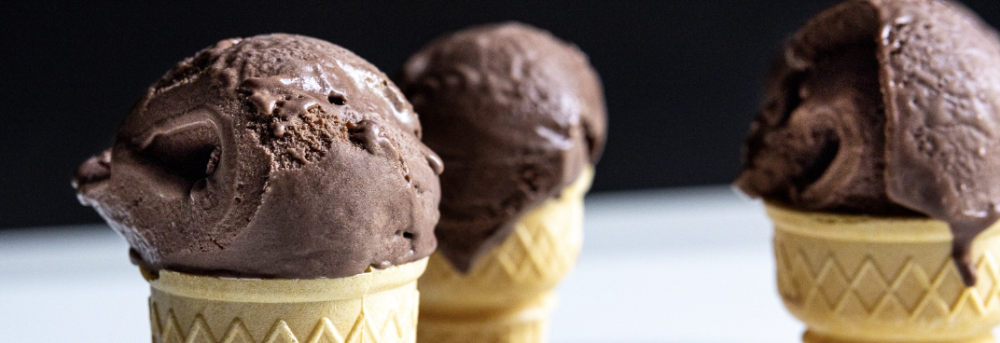

A healthy alternative to beat the summer cravings!

Description
This is a recipe hidden from the masses by a special group of individuals
that have ascended their humanity. This icecream takes all the good things
about icecream, without the negatives. Got your attention yet? Well, on
the off chance you're still unimpressed, this recipe contains 50 grams of
heavy duty protein per serving! What are your waiting for? Let's get
cooking!
Ingredients
- Protein Powder (Flavour of choice)
- Sweetener of choice
- Guar Gum
- Egg Whites
- Coconut Oil
Steps (For one serving)
- Place two scoops of protein powder into a mixing bowl
- Add 50ml of egg whites
- Add one tablespoon of guar gum
- Add one teaspoon of coconut oil
- Beat till smooth
- Microwave in medium heat for three minutes
- (Optional) Add a cup of crushed oreos
- Place in freezer